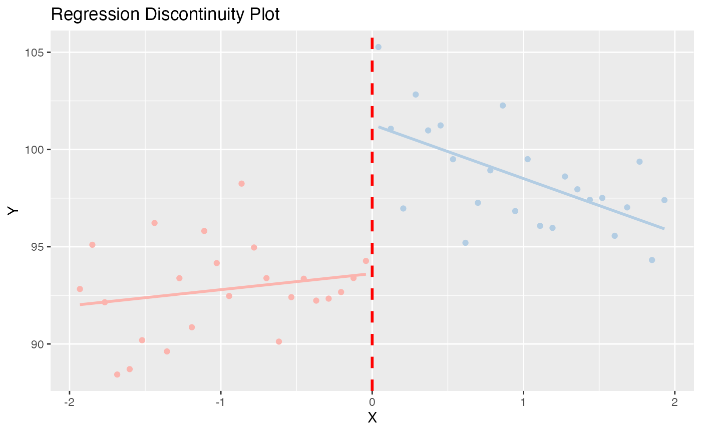

rdd.RmdQEDinfR provides functions which make basic Regression Discontinuity designs easy and quick. After specifying your model, the plot method for qed_rdd objects quickly creates the standard graph which motivates simple regression discontinuity designs.
Here we specify the model from the example code, and call the summary function. The data is from a study on the effect of minimum legal drinking age laws, where the discontinuity is at age 21
fit <- qed_rdd("all", "agecell", 21, mlda)
summary(fit)
#>
#> Call:
#> lm(formula = all ~ agecell * treated, data = data)
#>
#> Residuals:
#> Min 1Q Median 3Q Max
#> -4.368 -1.787 0.117 1.108 5.341
#>
#> Coefficients:
#> Estimate Std. Error t value Pr(>|t|)
#> (Intercept) 93.6184 0.9325 100.399 < 2e-16 ***
#> agecell 0.8270 0.8189 1.010 0.31809
#> treatedTRUE 7.6627 1.3187 5.811 6.4e-07 ***
#> agecell:treatedTRUE -3.6034 1.1581 -3.111 0.00327 **
#> ---
#> Signif. codes: 0 '***' 0.001 '**' 0.01 '*' 0.05 '.' 0.1 ' ' 1
#>
#> Residual standard error: 2.283 on 44 degrees of freedom
#> (2 observations deleted due to missingness)
#> Multiple R-squared: 0.6677, Adjusted R-squared: 0.645
#> F-statistic: 29.47 on 3 and 44 DF, p-value: 1.325e-10And then the graph method:
plot(fit)
#> Loading required package: ggplot2
#> `geom_smooth()` using formula 'y ~ x'